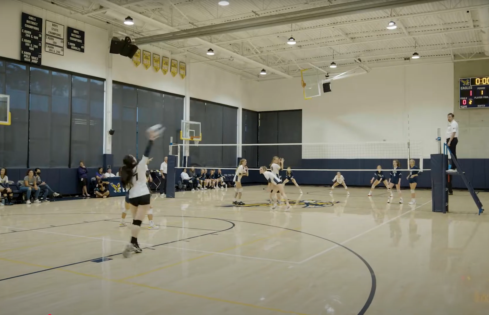

Volleyball

Volleyball at EPS is one of the most energetic and community-driven sports on campus. Players of all levels
come together to build teamwork, communication, and resilience both on and off the court. Practices focus on
developing strong fundamentals—serving, passing, setting, hitting, and defensive positioning—while also
emphasizing sportsmanship and mutual support. During games, the gym fills with excitement as teammates
encourage one another through every rally, creating an atmosphere of unity and school spirit. Whether
competing in league matches or scrimmaging during practice, EPS volleyball fosters confidence, dedication,
and friendships that extend far beyond the season.
What are some things you can do to help support volleyball at EPS?
- Show up to and support volleyball games!
- Raise awareness by posting stories at games or reposting existing stories
- Join EPS volleyball and be a part of the community
- Participate in EPS fundraisers to help fund athletics
- Buy atheltic merch and bring posters